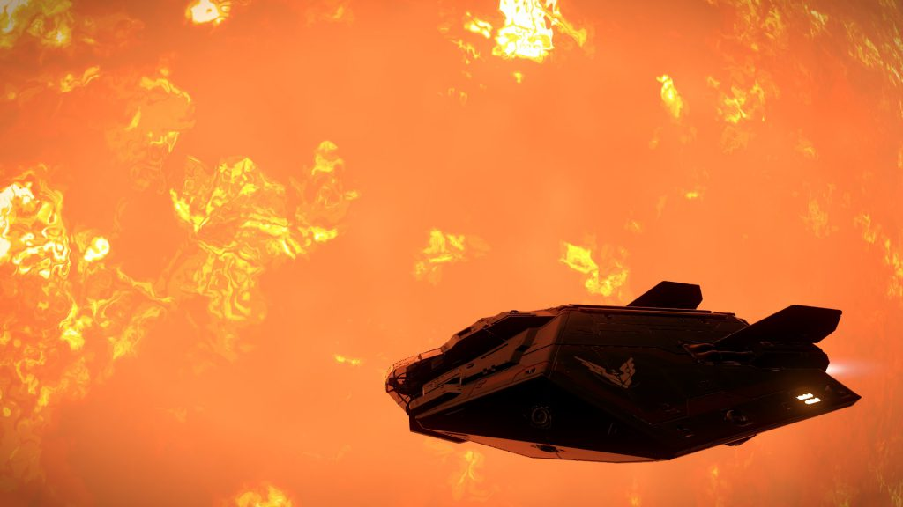
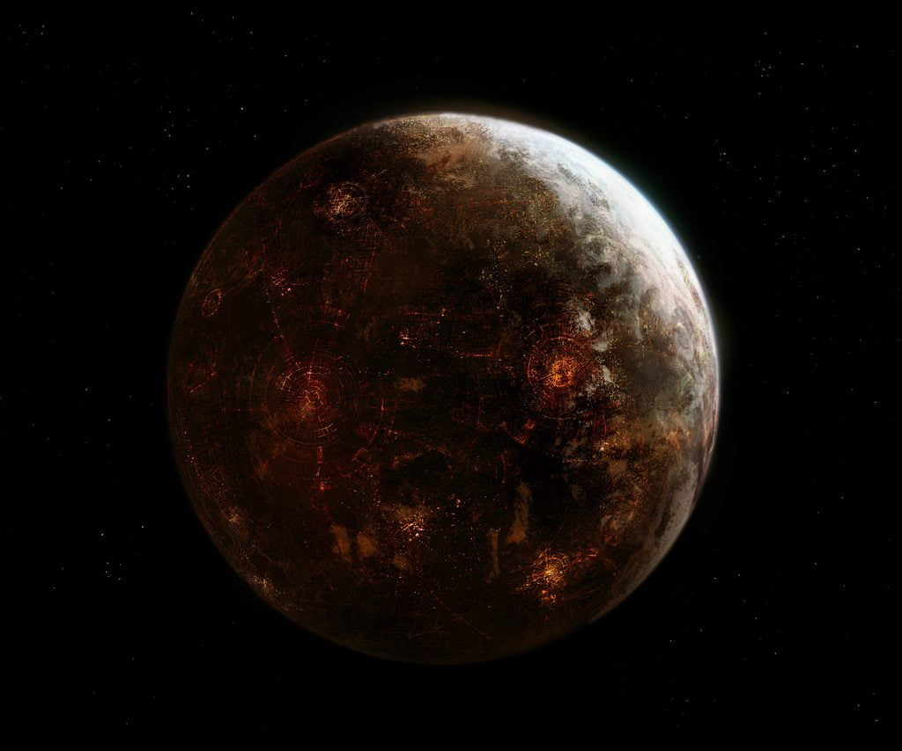
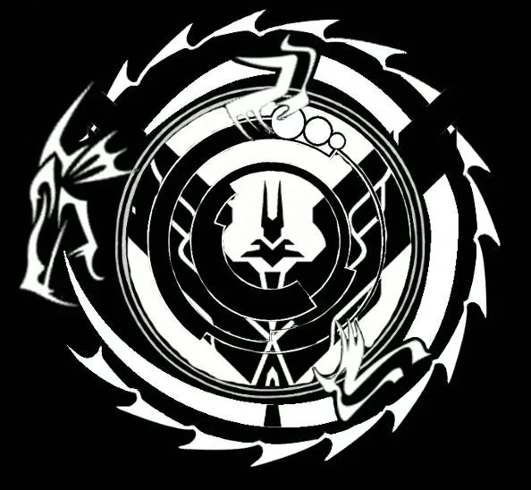
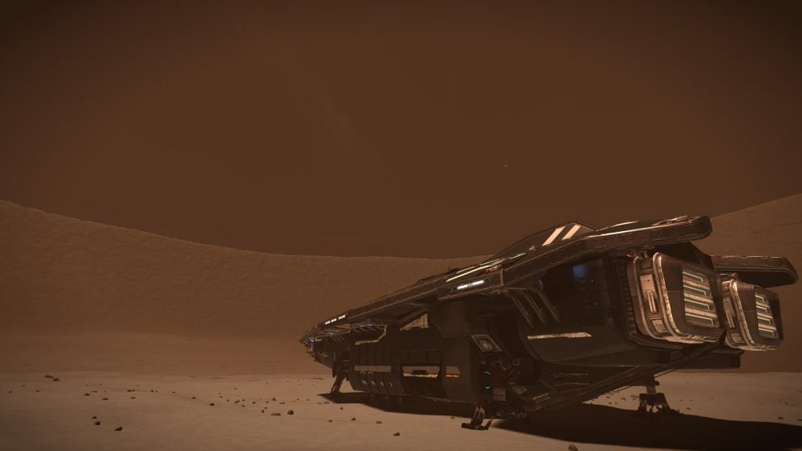
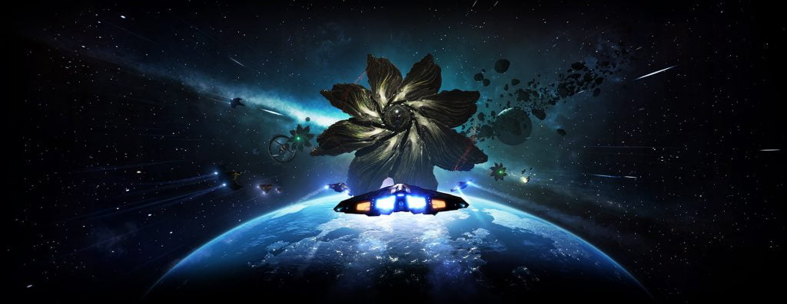

<section class="l-section wpb_row height_medium"><div class="l-section-h i-cf"><div class="g-cols vc_row type_default valign_top"><div class="vc_col-sm-12 wpb_column vc_column_container"><div class="vc_column-inner"><div class="wpb_wrapper"><div class="wpb_text_column"><div class="wpb_wrapper"><p><strong>Important Announcement</strong></p>
<p>It has come to the council’s attention that there is an initiative to increase the influence of the organisation known as The Dark Wheel, and that it may be supported by a broad coalition of factions.</p>
<p>This initiative is likely to cause conflict in the area between Shinrarta Dezhra and Sol.</p>
<p>Canonn (as you are no doubt aware) is an inclusive organisation that welcomes members from all factions. Even including members from rather shadowy and dangerous groups such as the Womens Institute and the Newport Pagnell Bridge Club. Despite some of our members’ questionable ethics, we leave our differences at the door and work together to unravel the mysteries of the galaxy.</p>
<p>This announcement is to clarify that in these uncertain times Canonn must maintain neutrality, and will not be a part of said initiative. Regardless of our strong desire to discover the location of Raxxla.</p>
<p>While we do not dictate the activities of our members outside of these hallowed halls and naturally individual commanders are free to do as they see fit, we do urge them not to claim to speak for Canonn on these or any other matters without specific instructions from the Council.</p>
<p>N.B. All current or future attempts to bribe council members on this or any other issue are strictly non-refundable.</p>
<p>Further information: <a href="https://forums.frontier.co.uk/threads/turning-the-wheel.546088/" rel="noopener noreferrer" target="_blank">Kai Zen’s forum post</a></p>
</div></div><div class="w-separator size_small with_line width_default thick_1 style_solid color_border align_center"><div class="w-separator-h"></div></div><div class="w-grid type_grid layout_6195 cols_3 ratio_4x3" data-grid-filter="false"><div class="w-grid-list"><article class="w-grid-item size_1x1 post-2486 us_portfolio type-us_portfolio status-publish has-post-thumbnail hentry us_portfolio_category-personal-lore" data-id="2486">
<div class="w-grid-item-h">
<a aria-label="Cmdr Engalo – A Dark Wheel In The Night (Part 11)" class="w-grid-item-anchor" href="/media/cmdr-engalo-a-dark-wheel-in-the-night-part-11" rel="bookmark">
<div class="w-post-elm post_image usg_post_image_1 stretched"></div><div class="w-vwrapper usg_vwrapper_1 align_left valign_top"></div><div class="w-vwrapper usg_vwrapper_2 align_left valign_top"><h2 class="w-post-elm post_title usg_post_title_1 entry-title color_link_inherit has_text_color">Cmdr Engalo – A Dark Wheel In The Night (Part 11)</h2><time class="w-post-elm post_date usg_post_date_1 entry-date published" datetime="2016-09-14T12:29:14+01:00">14th September 2016</time></div>
</a> </div>
</article>
<article class="w-grid-item size_1x1 post-4089 us_portfolio type-us_portfolio status-publish has-post-thumbnail hentry us_portfolio_category-game-lore" data-id="4089">
<div class="w-grid-item-h">
<a aria-label="Drew Wagar’s Lore: Raxxla" class="w-grid-item-anchor" href="/codex/drewwagar-raxxla" rel="bookmark">
<div class="w-post-elm post_image usg_post_image_1 stretched"></div><div class="w-vwrapper usg_vwrapper_1 align_left valign_top"></div><div class="w-vwrapper usg_vwrapper_2 align_left valign_top"><h2 class="w-post-elm post_title usg_post_title_1 entry-title color_link_inherit has_text_color">Drew Wagar’s Lore: Raxxla</h2><time class="w-post-elm post_date usg_post_date_1 entry-date published" datetime="2017-10-16T22:27:46+01:00">16th October 2017</time></div>
</a> </div>
</article>
<article class="w-grid-item size_1x1 post-4085 us_portfolio type-us_portfolio status-publish has-post-thumbnail hentry us_portfolio_category-game-lore" data-id="4085">
<div class="w-grid-item-h">
<a aria-label="Drew Wagar’s Lore: The Dark Wheel" class="w-grid-item-anchor" href="/codex/drewwagar-the-dark-wheel" rel="bookmark">
<div class="w-post-elm post_image usg_post_image_1 stretched"></div><div class="w-vwrapper usg_vwrapper_1 align_left valign_top"></div><div class="w-vwrapper usg_vwrapper_2 align_left valign_top"><h2 class="w-post-elm post_title usg_post_title_1 entry-title color_link_inherit has_text_color">Drew Wagar’s Lore: The Dark Wheel</h2><time class="w-post-elm post_date usg_post_date_1 entry-date published" datetime="2017-10-16T22:35:01+01:00">16th October 2017</time></div>
</a> </div>
</article>
<article class="w-grid-item post-4003 page type-page status-publish has-post-thumbnail hentry" data-id="4003">
<div class="w-grid-item-h">
<a aria-label="Game Lore" class="w-grid-item-anchor" href="/codex/game-lore" rel="bookmark">
<div class="w-post-elm post_image usg_post_image_1 stretched"></div><div class="w-vwrapper usg_vwrapper_1 align_left valign_top"></div><div class="w-vwrapper usg_vwrapper_2 align_left valign_top"><h2 class="w-post-elm post_title usg_post_title_1 entry-title color_link_inherit has_text_color">Game Lore</h2><time class="w-post-elm post_date usg_post_date_1 entry-date published" datetime="2017-10-15T18:09:44+01:00">15th October 2017</time></div>
</a> </div>
</article>
<article class="w-grid-item size_1x1 post-2256 us_portfolio type-us_portfolio status-publish has-post-thumbnail hentry us_portfolio_category-personal-lore" data-id="2256">
<div class="w-grid-item-h">
<a aria-label="Cmdr Engalo – The Dark Wheel (Part 3)" class="w-grid-item-anchor" href="/media/cmdr-engalo-the-dark-wheel-part-3" rel="bookmark">
<div class="w-post-elm post_image usg_post_image_1 stretched"></div><div class="w-vwrapper usg_vwrapper_1 align_left valign_top"></div><div class="w-vwrapper usg_vwrapper_2 align_left valign_top"><h2 class="w-post-elm post_title usg_post_title_1 entry-title color_link_inherit has_text_color">Cmdr Engalo – The Dark Wheel (Part 3)</h2><time class="w-post-elm post_date usg_post_date_1 entry-date published" datetime="2016-04-04T12:00:01+01:00">4th April 2016</time></div>
</a> </div>
</article>
<article class="w-grid-item size_1x1 post-4095 us_portfolio type-us_portfolio status-publish has-post-thumbnail hentry us_portfolio_category-game-lore" data-id="4095">
<div class="w-grid-item-h">
<a aria-label="Drew Wagar’s Lore Primer" class="w-grid-item-anchor" href="/codex/drewwagar-primer" rel="bookmark">
<div class="w-post-elm post_image usg_post_image_1 stretched"></div><div class="w-vwrapper usg_vwrapper_1 align_left valign_top"></div><div class="w-vwrapper usg_vwrapper_2 align_left valign_top"><h2 class="w-post-elm post_title usg_post_title_1 entry-title color_link_inherit has_text_color">Drew Wagar’s Lore Primer</h2><time class="w-post-elm post_date usg_post_date_1 entry-date published" datetime="2017-10-16T22:14:44+01:00">16th October 2017</time></div>
</a> </div>
</article>
</div><div class="w-grid-preloader"><div class="g-preloader type_1">
<div></div>
</div>
</div></div></div></div></div></div></div></section>